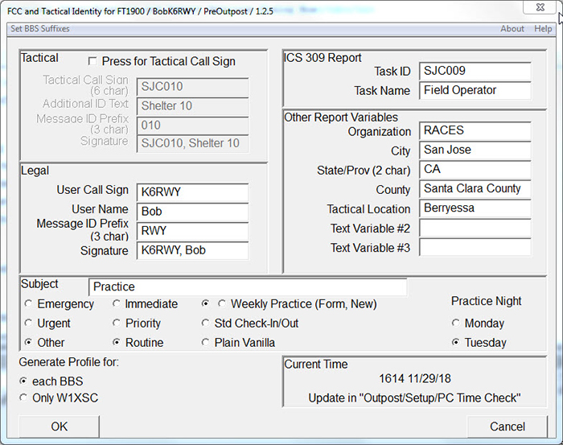
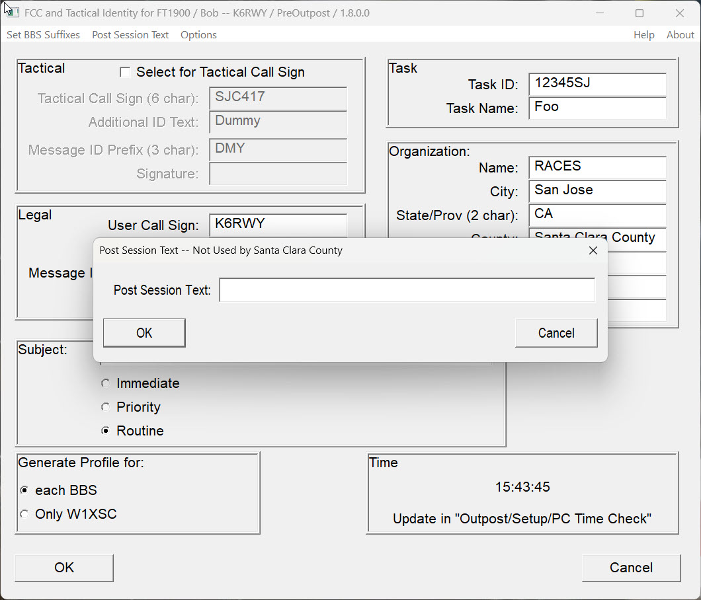

Data Input
FCC Credentials
|  |
| Fig. 5 -- Legal (FCC) and Tactical Identification and Report Settings Dialog Box, Tactical Greyed Out |
The FCC Credentials are the FCC call sign, the user's name, a three letter prefix used in numbering messages and a signature that is placed in plain text messages. The Tactical Credentials include the same information, Tactical call sign, user's name, three letter prefix and a signature.
When the FCC credentials only are to be used in Outpost the Press for Tactical Call Sign check box is left unchecked. This causes the tactical credentials to be unavailable for change. Using the mouse to "select" the check box will install a check mark in the box and also allow modification of the Tactical credentials.
The ICS Report use two of the Report variables, the Task ID and the Task Name in the header of the report. Choose something appropriate for those values. At the time of this writing the use of the Other Report Variables is unknown.
Finding Credentials Prepared in the Past
The Credentials are saved in files that are identified by type and the Call Sign. PreOutpost will find and display the credentials if they exist by merely inserting the call sign into the appropriate call sign edit box and leaving the edit box. Then the credentials found (if any) may be modified or left as they are. There is one slight problem with this scheme. If the user modifies the "User Name" or the "Additional ID Text" for the Tactical credentials (for example) then the search feature is for those credentials is shut down. This is because you went to all the trouble to change something, the search feature would override it if something was found.
In the event that nothing is found during the search, the current content of the edit boxes is unchanged. All the non-greyed fields may be modified while the dialog box is present on the screen. The entire content of the dialog box is saved appropriately so that it appears the next time PreOutpost is invoked and so that the searches for the credentials will succeed the next time. Furthermore, Outpost will be started with the values found in the dialog box when OK is pressed.
Post Session Text
|  |
A non-SCC option is to send a text after the session is over when a fcc only is used to communicate with the BBS. A dialog box is provided using the "Post Session Text" menu command to specify the post session text. Outpost provides a check box for allowing or disallowing the text to be sent. PreOutpost assumes that if text is entered in the dialog then it will be sent and sets the profiles accordingly.